دیدگاه کامپوننتها¶
نمای کلی¶
در این دیدگاه، هر کانتینر به مجموعهای از کامپوننتهای داخلی تجزیه میشود و مسئولیتها، ارتباطات و تعاملات آنها به تصویر کشیده میشود.
این دیدگاه، سومین سطح از مدلسازی C4 را تشکیل میدهد و به تیمهای توسعه کمک میکند تا درک عمیقتری از ساختار داخلی هر سرویس پیدا کنند. در ادامه، کامپوننتهای هر سرویس به تفکیک تشریح میشوند.
کامپوننتهای برنامه وب¶
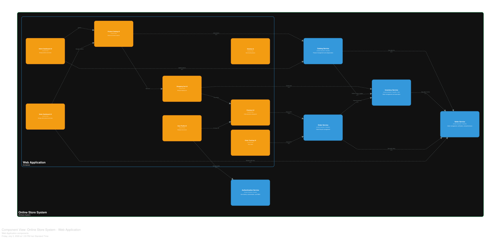
نمودار ۳-۱: کامپوننتهای برنامه وب
برنامه وب، رابط کاربری اصلی سامانه است که با استفاده از Next.js پیادهسازی شده است. این برنامه، هشت کامپوننت اصلی دارد که هر یک مسئولیت بخش خاصی از تجربه کاربری را بر عهده دارند.
| کامپوننت | مسئولیت | فناوری |
|---|---|---|
| رابط کاربری کاتالوگ محصولات | مرور و جستجوی محصولات | React |
| رابط کاربری سبد خرید | مدیریت سبد خرید | React |
| رابط کاربری تسویه حساب | ثبت سفارش و پرداخت | React |
| رابط کاربری پروفایل کاربر | مدیریت حساب کاربری | React |
| داشبورد مدیریت | مدیریت محصولات و سفارشات | React |
| داشبورد فروشنده | مدیریت محصولات و سفارشات فروشنده | React |
| رابط کاربری علاقهمندیها | ذخیره محصولات مورد علاقه | React |
| رابط کاربری پیگیری سفارش | پیگیری وضعیت سفارشات | React |
روابط بین کامپوننتهای برنامه وب¶
-
رابط کاربری کاتالوگ محصولات به رابط کاربری سبد خرید متصل میشود و امکان افزودن محصولات به سبد خرید را فراهم میکند.
-
رابط کاربری سبد خرید به رابط کاربری تسویه حساب متصل میشود و فرآیند تکمیل خرید را آغاز میکند.
-
رابط کاربری پروفایل کاربر اطلاعات کاربری را به رابط کاربری تسویه حساب ارائه میدهد.
-
داشبورد مدیریت از طریق رابط کاربری کاتالوگ محصولات محصولات را بهروزرسانی میکند.
-
داشبورد فروشنده از طریق رابط کاربری کاتالوگ محصولات محصولات خود را مدیریت میکند.
کامپوننتهای سرویس احراز هویت¶
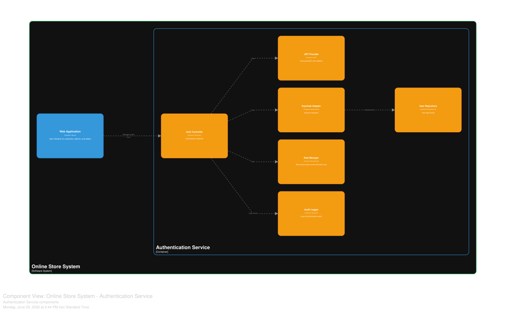
نمودار ۳-۲: کامپوننتهای سرویس احراز هویت
سرویس احراز هویت، مسئولیت مدیریت هویت، احراز هویت و کنترل دسترسی مبتنی بر نقش را بر عهده دارد. این سرویس با استفاده از Spring Boot و Keycloak پیادهسازی شده است.
| کامپوننت | مسئولیت | فناوری |
|---|---|---|
| کنترلگر احراز هویت | نقاط پایانی احراز هویت | Spring MVC |
| تأمینکننده توکن | تولید و اعتبارسنجی توکن | JJWT |
| هماهنگکننده Keycloak | یکپارچهسازی با Keycloak | Keycloak Spring |
| مخزن کاربران | دسترسی به دادههای کاربران | Spring Data JPA |
| مدیر نقشها | کنترل دسترسی مبتنی بر نقش با نقشهای فروشنده | Spring Security |
| ثبتکننده بازرسی | ثبت تمام رویدادهای احراز هویت | Spring AOP |
روابط بین کامپوننتهای سرویس احراز هویت¶
-
کنترلگر احراز هویت از تأمینکننده توکن برای تولید و اعتبارسنجی توکنها استفاده میکند.
-
کنترلگر احراز هویت از هماهنگکننده Keycloak برای یکپارچهسازی با سرویس مدیریت هویت استفاده میکند.
-
کنترلگر احراز هویت از مدیر نقشها برای اعمال کنترل دسترسی مبتنی بر نقش استفاده میکند.
-
هماهنگکننده Keycloak اطلاعات کاربران را از مخزن کاربران میخواند و در آن ذخیره میکند.
-
کنترلگر احراز هویت تمام رویدادها را در ثبتکننده بازرسی ثبت میکند.
کامپوننتهای سرویس کاتالوگ¶
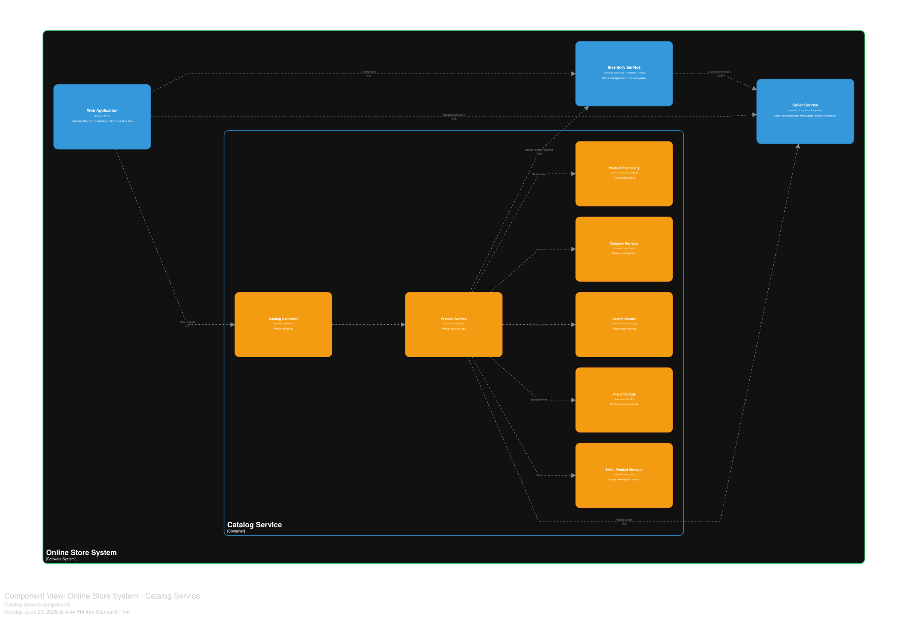
نمودار ۳-۳: کامپوننتهای سرویس کاتالوگ
سرویس کاتالوگ، مسئولیت مدیریت محصولات، دستهبندیها و تصاویر را بر عهده دارد. این سرویس با استفاده از Spring Boot و MongoDB پیادهسازی شده است.
| کامپوننت | مسئولیت | فناوری |
|---|---|---|
| کنترلگر کاتالوگ | نقاط پایانی محصولات | Spring MVC |
| سرویس محصول | منطق کسبوکار محصولات | Spring Service |
| مخزن محصول | دسترسی به دادههای محصولات | Spring Data MongoDB |
| مدیر دستهبندی | مدیریت دستهبندیها | Spring Service |
| نمایهساز جستجو | نمایهسازی Elasticsearch | Elasticsearch Client |
| ذخیرهسازی تصاویر | مدیریت تصاویر با MinIO | MinIO SDK |
| مدیر محصول فروشنده | مدیریت محصولات مختص فروشنده | Spring Service |
روابط بین کامپوننتهای سرویس کاتالوگ¶
-
کنترلگر کاتالوگ از سرویس محصول برای اجرای منطق کسبوکار استفاده میکند.
-
سرویس محصول دادهها را از مخزن محصول میخواند و در آن ذخیره میکند.
-
سرویس محصول از مدیر دستهبندی برای مدیریت دستهبندیها استفاده میکند.
-
سرویس محصول تغییرات را به نمایهساز جستجو منتشر میکند تا در Elasticsearch نمایهسازی شود.
-
سرویس محصول تصاویر را در ذخیرهسازی تصاویر ذخیره و بازیابی میکند.
-
سرویس محصول از مدیر محصول فروشنده برای مدیریت محصولات مختص فروشنده استفاده میکند.
کامپوننتهای سرویس موجودی¶
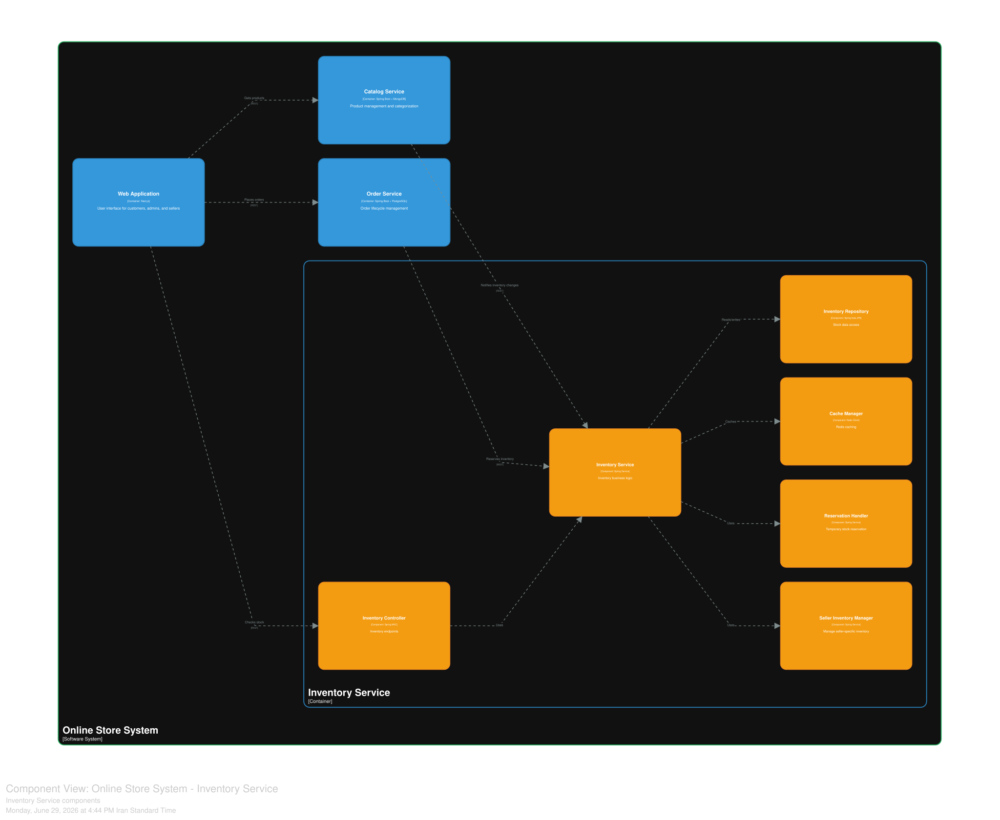
نمودار ۳-۴: کامپوننتهای سرویس موجودی
سرویس موجودی، مسئولیت مدیریت موجودی، رزرو و حافظه نهان را بر عهده دارد. این سرویس با استفاده از Spring Boot، PostgreSQL و Redis پیادهسازی شده است.
| کامپوننت | مسئولیت | فناوری |
|---|---|---|
| کنترلگر موجودی | نقاط پایانی موجودی | Spring MVC |
| سرویس موجودی | منطق کسبوکار موجودی | Spring Service |
| مخزن موجودی | دسترسی به دادههای موجودی | Spring Data JPA |
| مدیر حافظه نهان | حافظه نهان Redis | Redis Client |
| پردازشگر رزرو | رزرو موقت موجودی | Spring Service |
| مدیر موجودی فروشنده | مدیریت موجودی مختص فروشنده | Spring Service |
روابط بین کامپوننتهای سرویس موجودی¶
-
کنترلگر موجودی از سرویس موجودی برای اجرای منطق کسبوکار استفاده میکند.
-
سرویس موجودی دادهها را از مخزن موجودی میخواند و در آن ذخیره میکند.
-
سرویس موجودی از مدیر حافظه نهان برای کشینگ دادهها استفاده میکند.
-
سرویس موجودی از پردازشگر رزرو برای رزرو موقت موجودی استفاده میکند.
-
سرویس موجودی از مدیر موجودی فروشنده برای مدیریت موجودی مختص فروشنده استفاده میکند.
کامپوننتهای سرویس سفارش¶
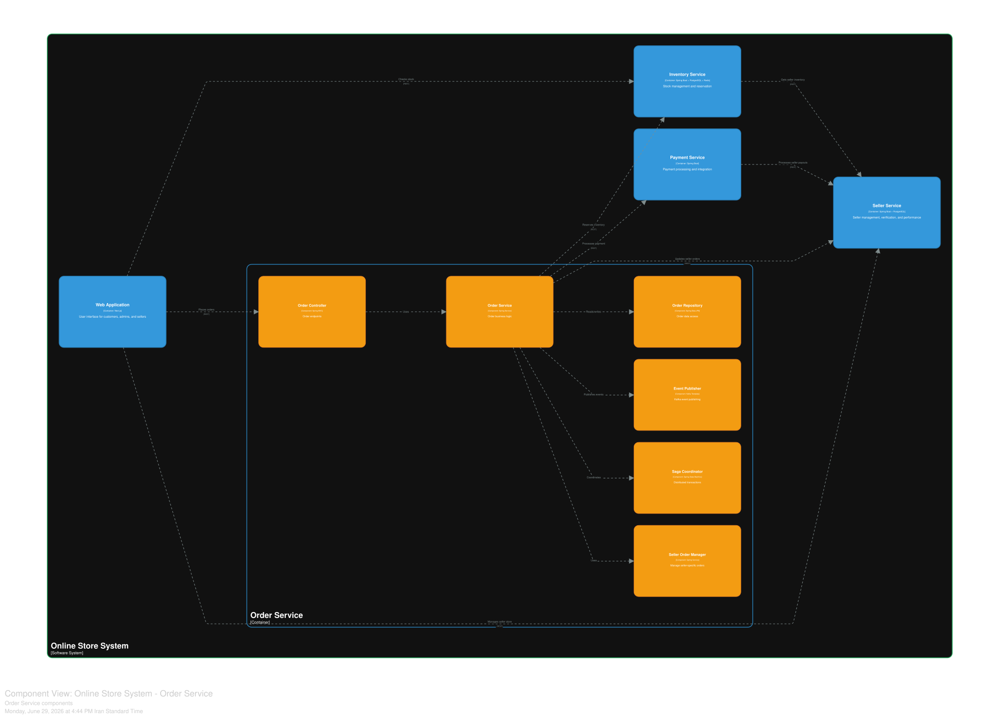
نمودار ۳-۵: کامپوننتهای سرویس سفارش
سرویس سفارش، مسئولیت مدیریت چرخه حیات سفارشات را بر عهده دارد. این سرویس با استفاده از Spring Boot و PostgreSQL پیادهسازی شده است.
| کامپوننت | مسئولیت | فناوری |
|---|---|---|
| کنترلگر سفارش | نقاط پایانی سفارش | Spring MVC |
| سرویس سفارش | منطق کسبوکار سفارش | Spring Service |
| مخزن سفارش | دسترسی به دادههای سفارش | Spring Data JPA |
| انتشاردهنده رویداد | انتشار رویداد در کافکا | Kafka Template |
| هماهنگکننده تراکنش توزیعشده | مدیریت تراکنشهای توزیعشده | Spring State Machine |
| مدیر سفارش فروشنده | مدیریت سفارشات مختص فروشنده | Spring Service |
روابط بین کامپوننتهای سرویس سفارش¶
-
کنترلگر سفارش از سرویس سفارش برای اجرای منطق کسبوکار استفاده میکند.
-
سرویس سفارش دادهها را از مخزن سفارش میخواند و در آن ذخیره میکند.
-
سرویس سفارش از انتشاردهنده رویداد برای انتشار رویدادها در کافکا استفاده میکند.
-
سرویس سفارش از هماهنگکننده تراکنش توزیعشده برای مدیریت تراکنشهای توزیعشده استفاده میکند.
-
سرویس سفارش از مدیر سفارش فروشنده برای مدیریت سفارشات مختص فروشنده استفاده میکند.
کامپوننتهای سرویس پرداخت¶
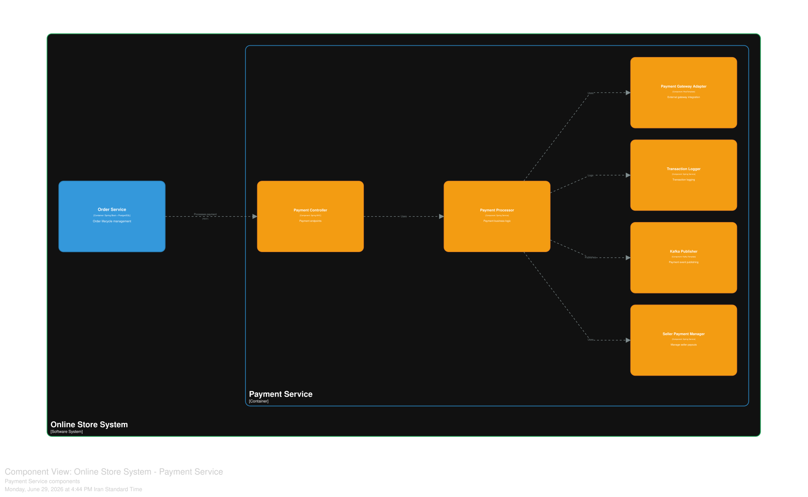
نمودار ۳-۶: کامپوننتهای سرویس پرداخت
سرویس پرداخت، مسئولیت پردازش پرداخت و یکپارچهسازی با درگاههای خارجی را بر عهده دارد. این سرویس با استفاده از Spring Boot پیادهسازی شده است.
| کامپوننت | مسئولیت | فناوری |
|---|---|---|
| کنترلگر پرداخت | نقاط پایانی پرداخت | Spring MVC |
| پردازشگر پرداخت | منطق کسبوکار پرداخت | Spring Service |
| هماهنگکننده درگاه پرداخت | یکپارچهسازی با درگاه خارجی | RestTemplate |
| ثبتکننده تراکنش | ثبت تراکنشها | Spring Service |
| انتشاردهنده کافکا | انتشار رویدادهای پرداخت | Kafka Template |
| مدیر پرداخت فروشنده | مدیریت تسویه حساب فروشندگان | Spring Service |
روابط بین کامپوننتهای سرویس پرداخت¶
-
کنترلگر پرداخت از پردازشگر پرداخت برای اجرای منطق کسبوکار استفاده میکند.
-
پردازشگر پرداخت از هماهنگکننده درگاه پرداخت برای یکپارچهسازی با درگاه خارجی استفاده میکند.
-
پردازشگر پرداخت تراکنشها را در ثبتکننده تراکنش ثبت میکند.
-
پردازشگر پرداخت رویدادها را از طریق انتشاردهنده کافکا منتشر میکند.
-
پردازشگر پرداخت از مدیر پرداخت فروشنده برای مدیریت تسویه حساب فروشندگان استفاده میکند.
کامپوننتهای سرویس فروشنده¶

نمودار ۳-۷: کامپوننتهای سرویس فروشنده
سرویس فروشنده، مسئولیت مدیریت، تأیید و عملکرد فروشندگان را بر عهده دارد. این سرویس با استفاده از Spring Boot و PostgreSQL پیادهسازی شده است.
| کامپوننت | مسئولیت | فناوری |
|---|---|---|
| کنترلگر فروشنده | نقاط پایانی فروشنده | Spring MVC |
| سرویس فروشنده | منطق کسبوکار فروشنده | Spring Service |
| مخزن فروشنده | دسترسی به دادههای فروشنده | Spring Data JPA |
| تأیید فروشنده | تأیید مدارک و هویت فروشنده | Spring Service |
| عملکرد فروشنده | پیگیری امتیازات و معیارهای فروشنده | Spring Service |
| کارمزد فروشنده | محاسبه کارمزد فروشندگان | Spring Service |
روابط بین کامپوننتهای سرویس فروشنده¶
-
کنترلگر فروشنده از سرویس فروشنده برای اجرای منطق کسبوکار استفاده میکند.
-
سرویس فروشنده دادهها را از مخزن فروشنده میخواند و در آن ذخیره میکند.
-
سرویس فروشنده از تأیید فروشنده برای تأیید مدارک و هویت فروشندگان استفاده میکند.
-
سرویس فروشنده از عملکرد فروشنده برای پیگیری امتیازات و معیارهای فروشندگان استفاده میکند.
-
سرویس فروشنده از کارمزد فروشنده برای محاسبه کارمزد فروشندگان استفاده میکند.
کامپوننتهای سرویس جستجو¶
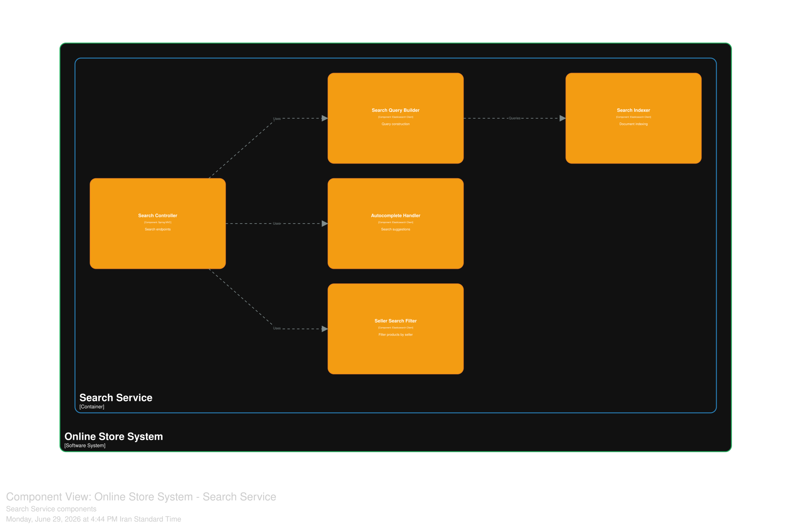
نمودار ۳-۸: کامپوننتهای سرویس جستجو
سرویس جستجو، مسئولیت جستجوی متن کامل و تکمیل خودکار را بر عهده دارد. این سرویس با استفاده از Elasticsearch پیادهسازی شده است.
| کامپوننت | مسئولیت | فناوری |
|---|---|---|
| کنترلگر جستجو | نقاط پایانی جستجو | Spring MVC |
| سازنده پرسوجوی جستجو | ساخت پرسوجو | Elasticsearch Client |
| نمایهساز جستجو | نمایهسازی اسناد | Elasticsearch Client |
| پردازشگر تکمیل خودکار | پیشنهادات جستجو | Elasticsearch Client |
| پالایشگر جستجوی فروشنده | پالایش محصولات بر اساس فروشنده | Elasticsearch Client |
روابط بین کامپوننتهای سرویس جستجو¶
-
کنترلگر جستجو از سازنده پرسوجوی جستجو برای ساخت پرسوجوهای جستجو استفاده میکند.
-
سازنده پرسوجوی جستجو از نمایهساز جستجو برای اجرای پرسوجوها استفاده میکند.
-
کنترلگر جستجو از پردازشگر تکمیل خودکار برای ارائه پیشنهادات جستجو استفاده میکند.
-
کنترلگر جستجو از پالایشگر جستجوی فروشنده برای پالایش نتایج بر اساس فروشنده استفاده میکند.
کامپوننتهای سرویس توصیهگر¶
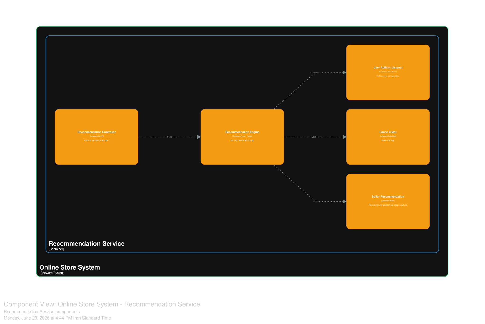
نمودار ۳-۹: کامپوننتهای سرویس توصیهگر
سرویس توصیهگر، مسئولیت ارائه توصیههای شخصیسازیشده به کاربران را بر عهده دارد. این سرویس با استفاده از Python و FastAPI پیادهسازی شده است.
| کامپوننت | مسئولیت | فناوری |
|---|---|---|
| کنترلگر توصیهگر | نقاط پایانی توصیهگر | FastAPI |
| موتور توصیهگر | منطق یادگیری ماشین برای توصیهها | Python + Pandas |
| شنونده فعالیت کاربر | مصرف رویدادهای کافکا | Kafka Python |
| مشتری حافظه نهان | حافظه نهان Redis | Redis Client |
| توصیهگر فروشنده | توصیه محصولات از فروشندگان خاص | Python |
روابط بین کامپوننتهای سرویس توصیهگر¶
-
کنترلگر توصیهگر از موتور توصیهگر برای اجرای منطق توصیهها استفاده میکند.
-
موتور توصیهگر از شنونده فعالیت کاربر برای دریافت رویدادهای فعالیت کاربران استفاده میکند.
-
موتور توصیهگر از مشتری حافظه نهان برای کشینگ نتایج توصیهها استفاده میکند.
-
موتور توصیهگر از توصیهگر فروشنده برای ارائه توصیههای مبتنی بر فروشنده استفاده میکند.
کامپوننتهای سرویس اطلاعرسانی¶
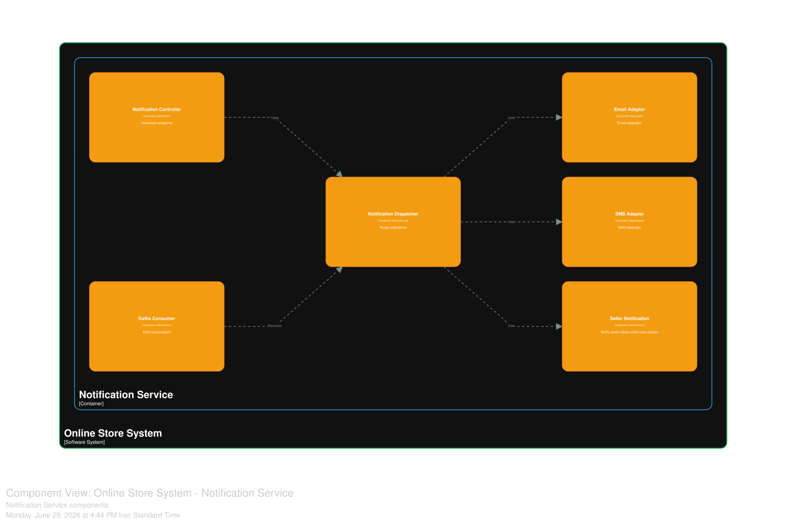
نمودار ۳-۱۰: کامپوننتهای سرویس اطلاعرسانی
سرویس اطلاعرسانی، مسئولیت ارسال اطلاعرسانیهای چندکاناله را بر عهده دارد. این سرویس با استفاده از Spring Boot پیادهسازی شده است.
| کامپوننت | مسئولیت | فناوری |
|---|---|---|
| کنترلگر اطلاعرسانی | نقاط پایانی اطلاعرسانی | Spring MVC |
| توزیعکننده اطلاعرسانی | مسیریابی اطلاعرسانیها | Spring Service |
| هماهنگکننده ایمیل | یکپارچهسازی با ایمیل | Spring Mail |
| هماهنگکننده پیامک | یکپارچهسازی با پیامک | RestTemplate |
| مصرفکننده کافکا | مصرف رویدادها | Kafka Listener |
| اطلاعرسانی فروشنده | اطلاعرسانی به فروشندگان درباره سفارشات و بهروزرسانیها | Spring Service |
روابط بین کامپوننتهای سرویس اطلاعرسانی¶
-
کنترلگر اطلاعرسانی از توزیعکننده اطلاعرسانی برای مسیریابی اطلاعرسانیها استفاده میکند.
-
توزیعکننده اطلاعرسانی از هماهنگکننده ایمیل برای ارسال ایمیلها استفاده میکند.
-
توزیعکننده اطلاعرسانی از هماهنگکننده پیامک برای ارسال پیامکها استفاده میکند.
-
مصرفکننده کافکا رویدادها را دریافت کرده و به توزیعکننده اطلاعرسانی ارسال میکند.
-
توزیعکننده اطلاعرسانی از اطلاعرسانی فروشنده برای اطلاعرسانی به فروشندگان استفاده میکند.
کامپوننتهای سرویس تحلیل¶
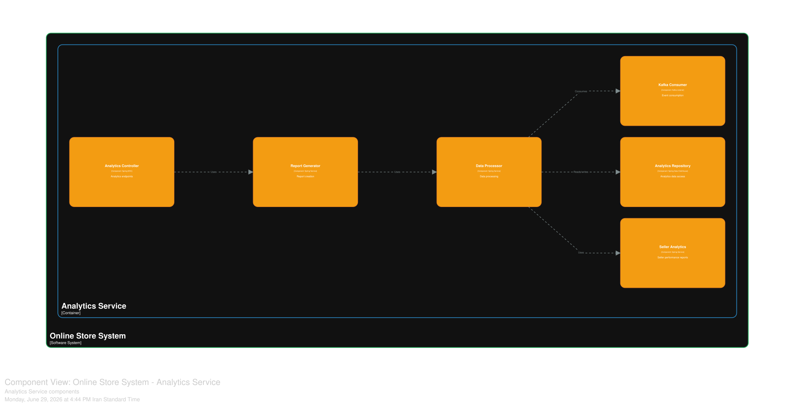
نمودار ۳-۱۱: کامپوننتهای سرویس تحلیل
سرویس تحلیل، مسئولیت گزارشدهی و تحلیل دادهها را بر عهده دارد. این سرویس با استفاده از Spring Boot و ClickHouse پیادهسازی شده است.
| کامپوننت | مسئولیت | فناوری |
|---|---|---|
| کنترلگر تحلیل | نقاط پایانی تحلیل | Spring MVC |
| تولیدکننده گزارش | ایجاد گزارشها | Spring Service |
| پردازشگر داده | پردازش دادهها | Spring Service |
| مصرفکننده کافکا | مصرف رویدادها | Kafka Listener |
| مخزن تحلیل | دسترسی به دادههای تحلیل | Spring Data ClickHouse |
| تحلیل فروشنده | گزارشهای عملکرد فروشندگان | Spring Service |
روابط بین کامپوننتهای سرویس تحلیل¶
-
کنترلگر تحلیل از تولیدکننده گزارش برای ایجاد گزارشها استفاده میکند.
-
تولیدکننده گزارش از پردازشگر داده برای پردازش دادهها استفاده میکند.
-
پردازشگر داده از مصرفکننده کافکا برای دریافت رویدادها استفاده میکند.
-
پردازشگر داده دادهها را از مخزن تحلیل میخواند و در آن ذخیره میکند.
-
پردازشگر داده از تحلیل فروشنده برای ارائه گزارشهای عملکرد فروشندگان استفاده میکند.
کامپوننتهای پشته پایش¶

نمودار ۳-۱۲: کامپوننتهای پشته پایش
پشته پایش، مسئولیت مشاهدهپذیری و پایش سامانه را بر عهده دارد. این پشته با استفاده از Prometheus، Grafana، Jaeger و ELK پیادهسازی شده است.
| کامپوننت | مسئولیت | فناوری |
|---|---|---|
| پرومتئوس | جمعآوری معیارها | Prometheus |
| گرافانا | داشبورد و نمایشگر | Grafana |
| یاگر | ردیابی توزیعشده | Jaeger |
| پشته ELK | تجمیع لاگ | Elasticsearch + Logstash + Kibana |
روابط بین کامپوننتهای پشته پایش¶
-
پرومتئوس معیارها را از تمام سرویسها دریافت میکند.
-
گرافانا دادههای پرومتئوس را نمایش میدهد.
-
یاگر ردگیریهای توزیعشده را از تمام سرویسها دریافت میکند.
-
پشته ELK لاگها را از تمام سرویسها دریافت میکند.
کامپوننتهای لایه مقاومسازی¶

نمودار ۳-۱۳: کامپوننتهای لایه مقاومسازی
لایه مقاومسازی، مسئولیت افزایش تابآوری سامانه را بر عهده دارد. این لایه با استفاده از Resilience4J و Istio پیادهسازی شده است.
| کامپوننت | مسئولیت | فناوری |
|---|---|---|
| قطعکننده مدار | جلوگیری از خرابیهای آبشاری | Resilience4J |
| مکانیزم تکرار | تکرار خودکار با پشتیبان نمایی | Resilience4J |
| محدودکننده نرخ | محدودیت درخواستها برای هر سرویس | Resilience4J + Kong |
کامپوننتهای سرویس پشتیبانگیری¶
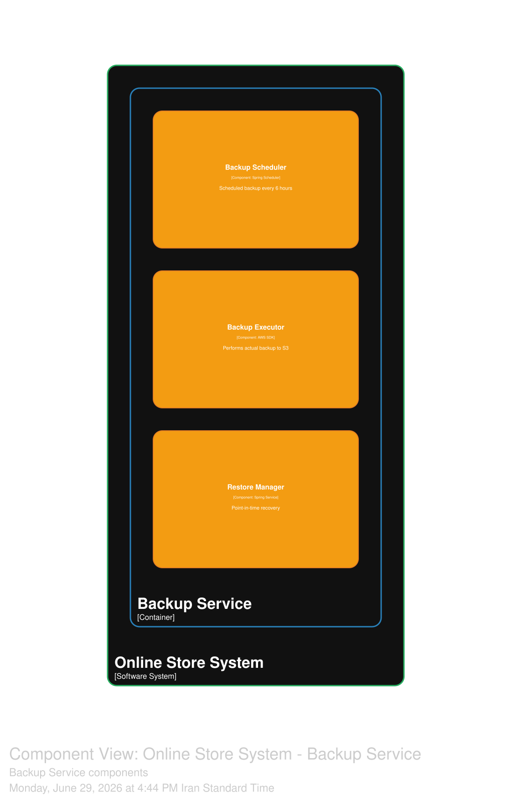
نمودار ۳-۱۴: کامپوننتهای سرویس پشتیبانگیری
سرویس پشتیبانگیری، مسئولیت پشتیبانگیری خودکار و بازیابی در شرایط فاجعه را بر عهده دارد. این سرویس با استفاده از Spring Boot و AWS S3 پیادهسازی شده است.
| کامپوننت | مسئولیت | فناوری |
|---|---|---|
| زمانبند پشتیبانگیری | پشتیبانگیری زمانبندیشده هر ۶ ساعت | Spring Scheduler |
| اجراکننده پشتیبانگیری | انجام پشتیبانگیری واقعی در S3 | AWS SDK |
| مدیر بازیابی | بازیابی در نقطه زمانی مشخص | Spring Service |
روابط بین کامپوننتهای سرویس پشتیبانگیری¶
-
زمانبند پشتیبانگیری هر ۶ ساعت یکبار، اجراکننده پشتیبانگیری را فراخوانی میکند.
-
اجراکننده پشتیبانگیری با استفاده از AWS SDK، پشتیبانگیری را در S3 ذخیره میکند.
-
مدیر بازیابی امکان بازیابی دادهها از نقاط زمانی مشخص را فراهم میکند.
پانویسها¶
¹ واحد قابل استقرار مجزا در معماری نرمافزار که میتواند به صورت مستقل اجرا و مقیاسپذیر شود.
² رابط برنامهنویسی برای ارتباط بین سرویسها که از پروتکل HTTP و روشهای استاندارد استفاده میکند.
³ الگویی که از ارسال درخواست به سرویس معیوب جلوگیری میکند و به آن فرصت بازیابی میدهد.
⁴ الگویی که در صورت بروز خطا، درخواست را با زمانهای انتظار افزایشی مجدداً ارسال میکند.
⁵ الگویی که تعداد درخواستهای ارسالی به یک سرویس را در بازه زمانی مشخص محدود میکند.
⁶ سامانهای توزیعشده برای پخش رویداد و پیامرسانی با توان عملیاتی بالا.
⁷ حافظهای برای ذخیره موقت دادهها با کارایی بالا.
⁸ پایگاه داده اسنادمحور برای ذخیرهسازی دادههای نیمهساختاریافته.
⁹ موتور جستجوی متنباز با قابلیت جستجوی متن کامل.
¹⁰ سامانهای برای ذخیرهسازی اشیاء مانند تصاویر و فایلهای ایستا.